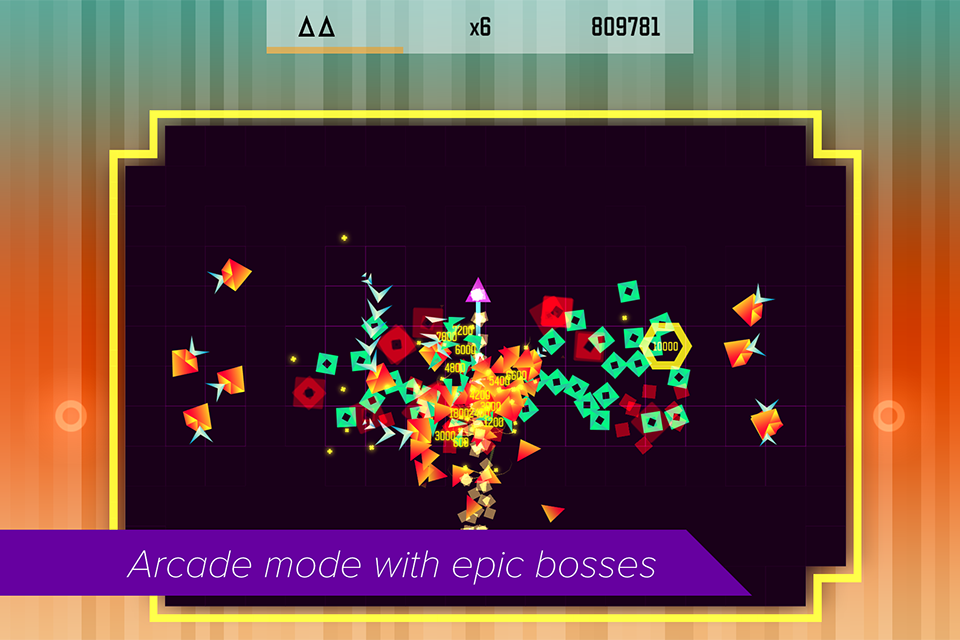
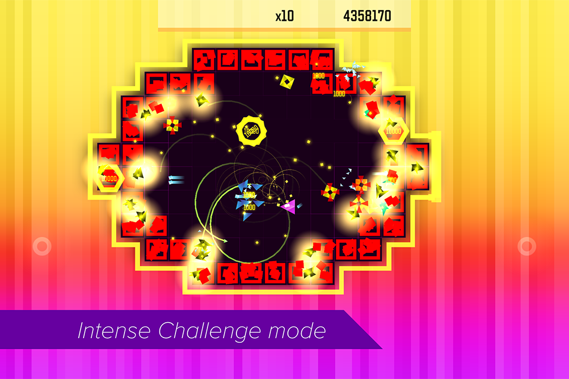
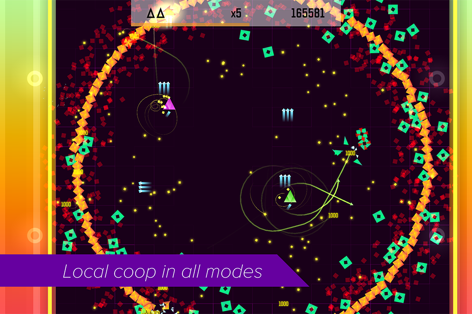
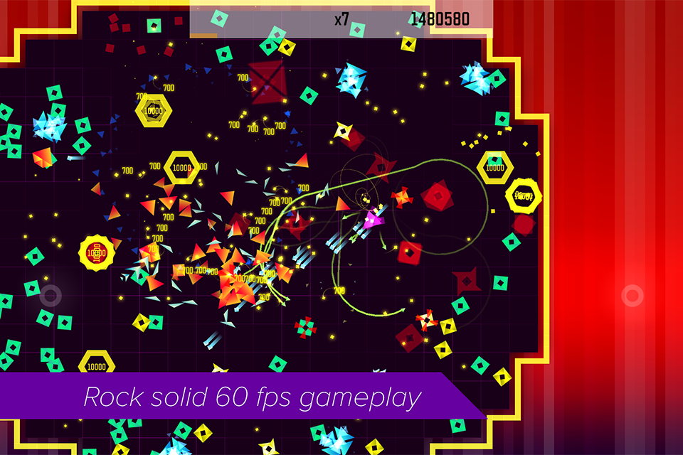

Trigonarium is a hardcore twin-stick shooter for fans of challenging arcade gaming. Fight your way through multitudes of enemy formations in constantly shifting battle arenas to face the colossal level bosses.
iOS & AppleTV - App Store (iOS8+, Universal) Release date: 8. April, 2015 Available Now!
Windows - Steam Release date: 1. September 2015
   
Kimmo Lahtinen / @gimblll - Design / Code / Art
Kimmo is a veteran game developer whose credits include indie games such as Drift'n'Drive and Cosmic Mechanic as well as console games such as Resogun, Outland and Dead Nation.
Tommi Lahtinen / @tommybaynen - Music
Tommi is an electronic music producer whose tracks have been played worldwide by the likes of Above and Beyond, Armin van Buuren, Dash Berlin and Paul van Dyk.